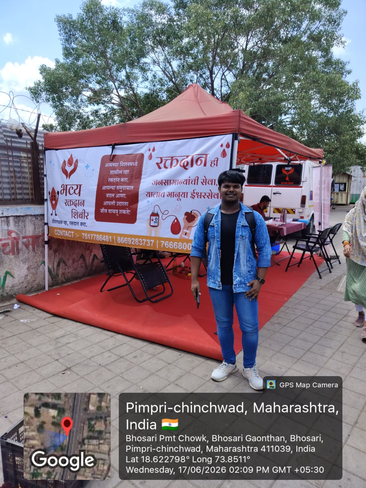
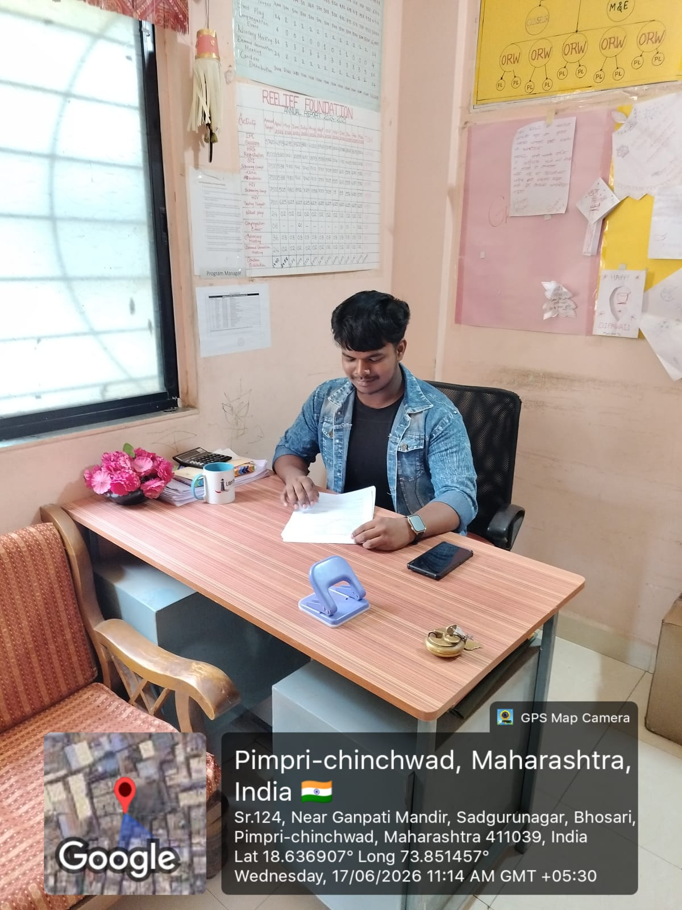
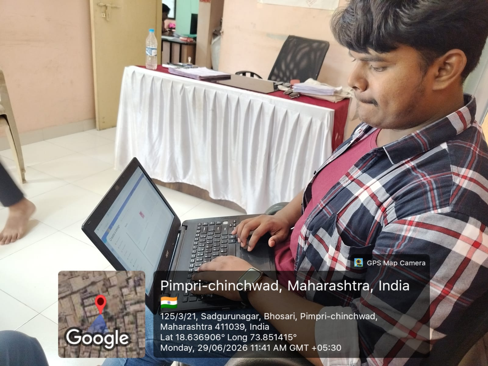
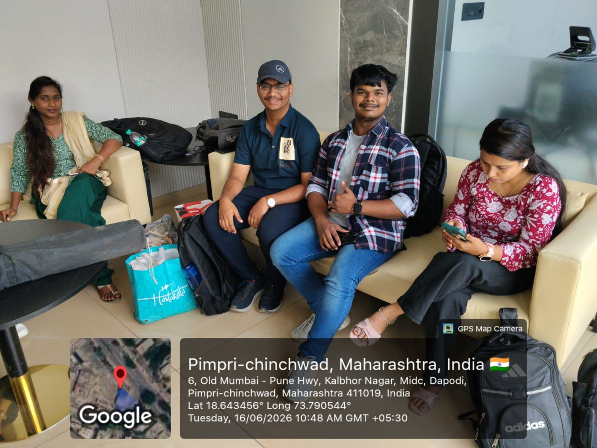
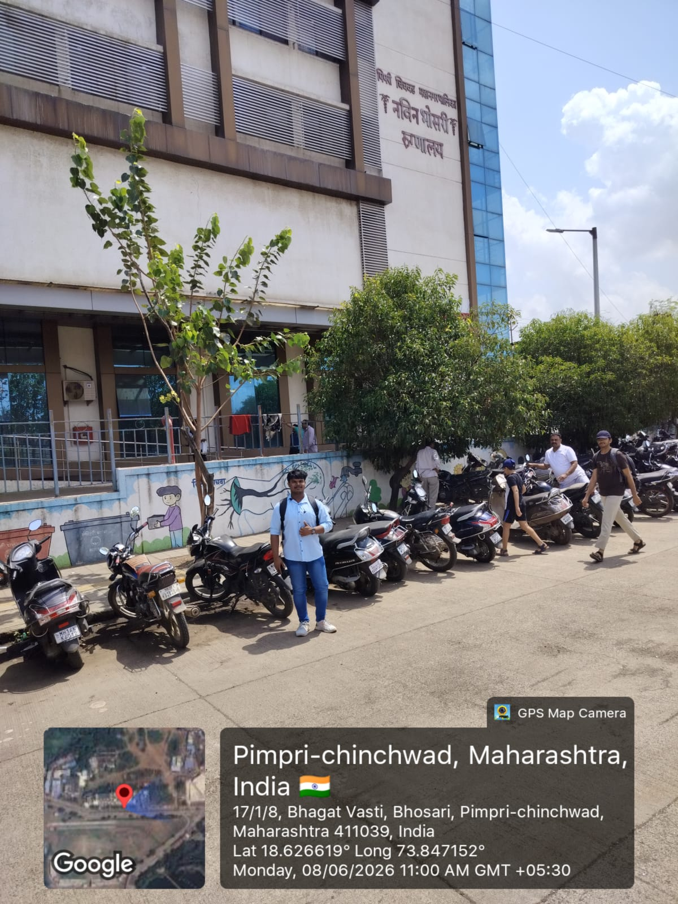
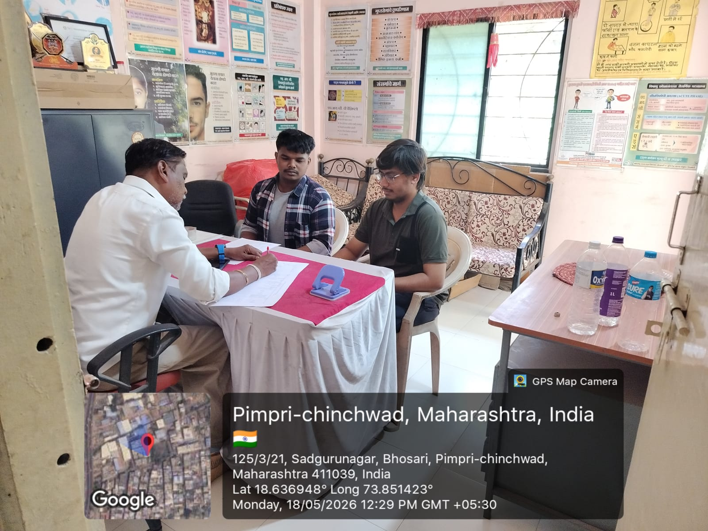

"To gain practical exposure to community health programs while contributing technical and digital skills to support Reelief Foundation's HIV/AIDS prevention and community health initiatives for marginalized populations."
ACTIVITIES CONDUCTED
1. HIV/AIDS Migrant Project

Organized community health camps for migrant workers, conducting HIV awareness and rapid testing.
2. FSW Project Documentation

Maintained health records and patient documentation for the Female Sex Worker (FSW) project.
3. Digital Outreach Management

Managed social media and utilized AI tools (Gemini/ChatGPT) to design digital awareness materials.
4. Team Scheduling & Coordination

Deployed web-based scheduling systems to improve advance planning and internal staff coordination.
5. Municipal Hospital Outreach

Coordinated directly with local municipal hospitals for patient referral linkages and health drives.
6. Community Counseling

Participated in one-on-one sessions helping to provide health guidance to marginalized individuals.
THEORETICAL FRAMEWORKS APPLIED
| Core Concept | Application & Outcomes in the Field |
|---|---|
| Bridging the Digital Divide in Public Health | Addressing disparities in tech access by introducing digital awareness tools (AI, social media) to marginalized communities, ensuring equitable access to health information and preventive care. |
| Grassroots Health Data Management | Implementing low-cost, scalable data systems for local NGOs. Digitizing FSW patient records improves tracking, enables data-driven interventions, and ensures secure continuity of care. |
IMPACT & OUTCOMES
🌍 Community Impact
- Reached 400+ beneficiaries across health camps.
- 70+ active participants per awareness session.
- Provided essential health guidance to marginalized individuals.
⚙️ Operational Efficiency
- Managed 3 camps/week via web-based scheduling.
- Digitized patient records for faster hospital referrals.
- Significantly reduced last-minute coordination issues.
📈 Digital Growth
- Enhanced NGO visibility through LinkedIn campaigns.
- Leveraged AI tools to design awareness materials.
- Boosted local donor outreach and hospital engagement.